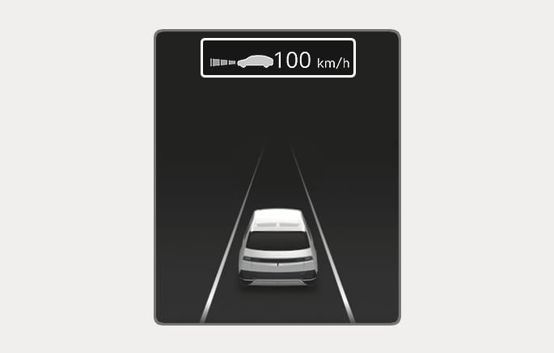
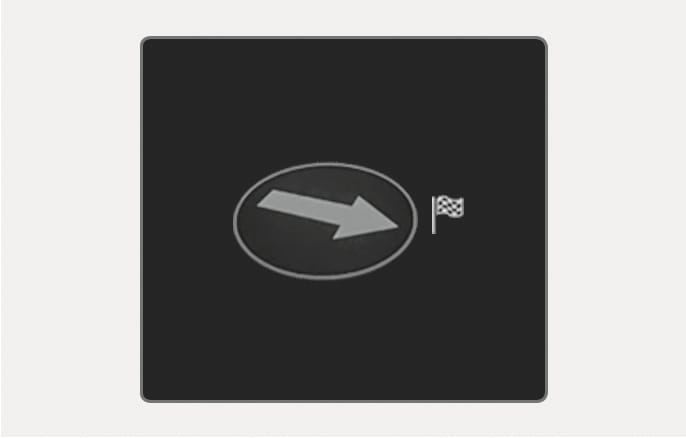
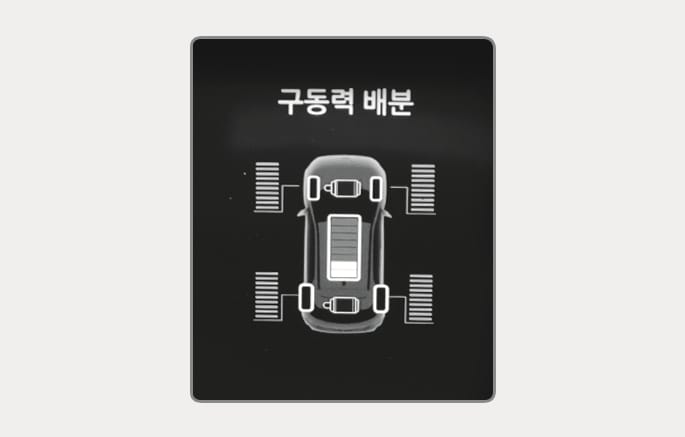
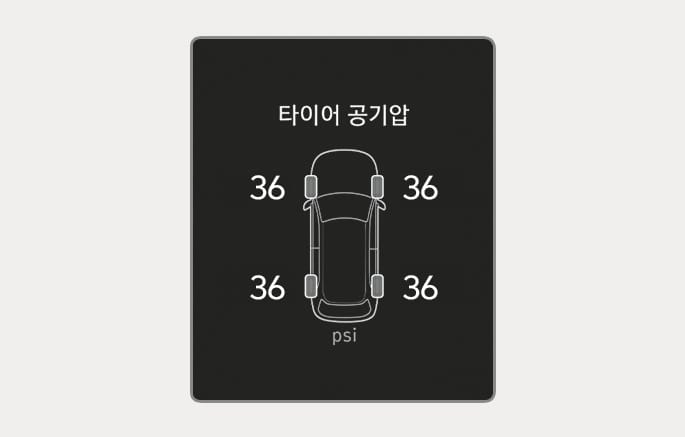
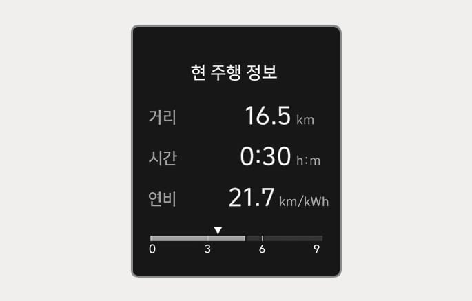
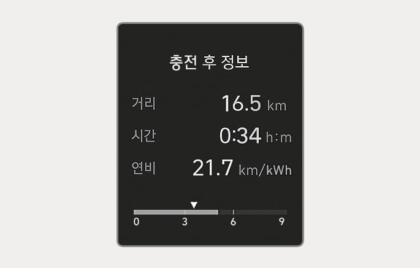

클러스터 뷰 모드
스티어링 휠의
2C_DrivingAssistMode
스마트 크루즈 컨트롤, 차로 유지 보조, 고속도로 주행 보조 등 다양한 운전자 보조 기능의 작동 정보를 표시합니다('운전자 보조 기능' 참고).
운전자 보조 기능 사용 시, 사용 중인 기능의 작동 상태가 주행 보조 뷰 상단의 정보 영역에 표시됩니다.

2C_ADASInfo

2C_TurnByTurnMode
내비게이션 사용 중 길안내 정보를 표시합니다.

2C_EnergyFlowAWDDistribution
-
차량 주행 상태에 따른 EV 시스템의 에너지흐름을 알려주는 화면이 표시됩니다.
-
자동으로 전·후륜(AWD) 구동 모드가 작동하면 전륜과 후륜의 구동력 배분 상태를 알려주는 화면이 표시됩니다.
주행 정보, 통합 경고등 등 다양한 차량 정보를 표시하며,
-
타이어 공기압: 각 타이어의 공기압과 저압 타이어 정보가 표시됩니다('타이어 공기압 경보 시스템 (TPMS)' 참고).

2C_TireLowPressureInfo
-
현 주행 정보: 현재 주행 사이클의 주행 거리, 주행 시간, 주행 연비, 순간 연비가 표시됩니다.

2C_CurrentDrivingInfo
-
스티어링 휠의 OK 버튼을 길게 누르면 주행 정보를 초기화할 수 있습니다.
-
시동을 끄고 운전석 도어를 열거나 시동을 끈 후 3분이 지나고 시동을 다시 걸면 주행 정보가 자동으로 초기화됩니다.
-
선택한 뷰 모드와 관계없이, 시동을 끄면 현재 주행 사이클의 주행 정보가 4초 동안 표시됩니다.
-
-
충전 후 정보: 충전 이후의 주행 거리, 주행 시간, 주행 연비, 순간 연비가 표시됩니다.

2C_InfoAfterCharging
-
누적 정보: 수동으로 정보를 초기화한 이후의 누적 주행 거리, 주행 시간, 주행 연비, 순간 연비가 표시됩니다.
2C_AccumulatedInfo
-
서비스 메시지: 통합 경고등과 관련된 상세 정보를 표시합니다.